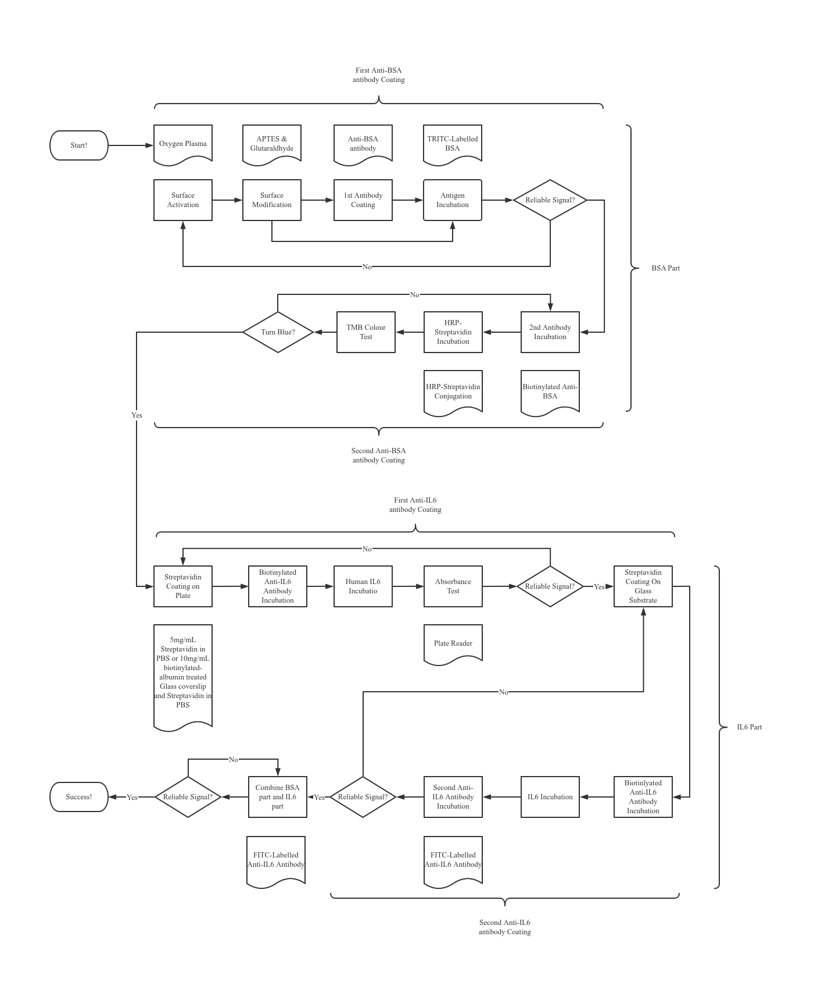

Self-calibrating sepsis detection for the
bedside.
Sepsensor is developing a compact fluorescence reader and disposable
microfluidic cartridge to measure IL-6 in under 30 minutes,
helping clinicians move earlier when sepsis decisions are
time-critical.
Under 30 minutesTarget bedside turnaroundIL-6 first assayBiomarker focus for the current platformReader + cartridgeReusable system with disposable test flow
Prototype in validation
Portable reader with disposable cartridge workflow
Built through research, prototyping, and accelerator support.
Biosensor competition rootsUniversity of Glasgow collaborationInfinity GWilson’s FoundrySTAC Cohort 6
Why it matters
Sepsis decisions lose value when the signal arrives too late.
Sepsensor is being shaped around a simple constraint: a useful
sepsis biomarker has to be fast, portable, and reliable enough to
fit real bedside workflows, not only central labs.
Central-lab delays
Traditional biomarker workflows often depend on centralized
equipment and long turnaround times, delaying time-sensitive
escalation and treatment decisions.
Calibration burden
Reliable point-of-care measurement is not only about optics. It
also depends on controlling variation across cartridges, assay
assembly, and read conditions.
Bedside practicality
Clinicians need a system that can move near the patient, reduce
operational complexity, and support earlier action without
specialist lab overhead.
How it works
A compact optical reader built around self-calibration.
The current Sepsensor platform combines a fluorescence readout, a
signal-processing pipeline, and a disposable microfluidic
cartridge. The first assay focuses on IL-6, with the wider
platform intended to expand to additional biomarkers over time.
Prototype optical architecture from the current system design.
Optical readout
A camera-based fluorescence setup reads the assay signal and
converts it into a usable concentration estimate through image
processing.
Self-calibration
The differentiator is the built-in calibration structure,
designed to reduce measurement drift and manufacturing
variation without pushing complexity back to the user.
Disposable cartridge flow
The cartridge handles the test path while the reader remains
reusable. This keeps the system compatible with routine
bedside use and future assay expansion.
Current progress
Prototype work backed by lab development and venture support.
The project has grown from competition and dissertation work into
a startup-oriented prototype effort with assay development,
hardware iteration, and external program support.
01
Research foundation
Early development came through biosensor competition work and
the MSc dissertation focused on self-calibrating rapid
sepsis detection.
02
Prototype and assay development
The current system combines assay experimentation, optical
readout design, cartridge development, and casing iteration.
03
Programme support
Sepsensor materials reference Infinity G, Wilson’s Foundry,
and STAC as key support points for business development and
prototype maturation.
04
Next step
The immediate direction is prototype validation, external
partnership development, and a clearer route to pilot-ready
deployment.

Assay planning and integration workflow from the experimental
development phase.
Team
Multidisciplinary by design.
The current project material consistently points to a team that
spans assay work, detection systems, chemistry, electronics, and
scientific guidance.
Yazan Haidar
Bio-assay and external programme lead.
Abdullah AlFakhrey
Detection system, signal workflow, and prototype integration.
Tao Xu
Surface chemistry and assay development.
Jaswinder Singh
Electronics and supporting system development.
Prof. Julien Reboud
Scientific advisor and academic guidance.
Get in touch
For pilots, partnerships, or product conversations.
Sepsensor is currently best presented as a prototype platform in
validation, with a clear bedside focus and a first IL-6 assay.